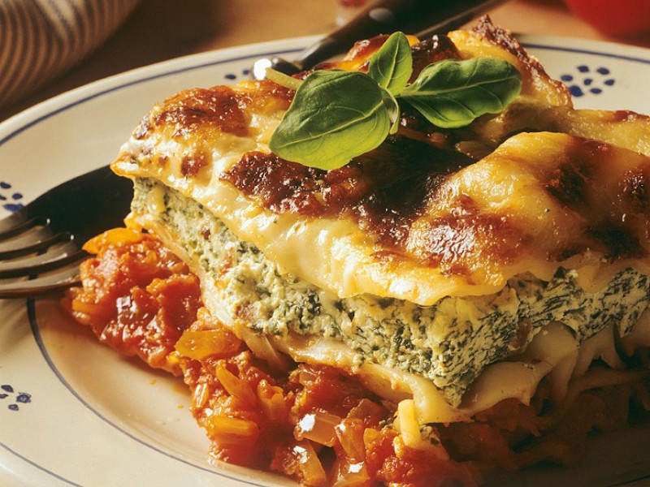

Spinach and Ricotta Lasagna

Easy Peasy Spinach and Ricotta Lasagna
This quick and easy Spinach and Ricotta Lasagna will have the whole family coming back for seconds... or thirds!
Completely vegetarian and clocking in at only 290 calories with 18g of protein, this deliciously satisfying dinner is something you can feel good about eating.
Ingredients
- 15 oz Package ricotta cheese
- 10 oz Package frozen chopped spinach, thawed and well drained
- 2 cups Shredded mozzarella cheese
- 4 cups Classico tomato and basil pasta sauce
- 9 Lasagna noodles
- 1/4 cup Water
Cooking Directions
- Mix ricotta cheese, spinach and 1 cup mozzarella cheese.
- Spread 1 cup pasta sauce in 2-quart shallow baking dish. Top with 3 lasagna noodles and half the spinach mixture. Repeat layers. Top with remaining pasta sauce. Slowly pour water around inside edges of baking dish. Cover.
- Bake at 400 degrees F for 40-50 minutes uncovered. Sprinkle with remaining mozzarella cheese. Broil for an additional 10 minutes or until hot. Let stand for 10 minutes before serving.
Tips
To thaw spinach, microwave on HIGH for 3 minutes. Break apart with fork halfway through heating.
Serving Suggestions
Garnish with fresh basil and serve with warmed baguette and garlic butter.